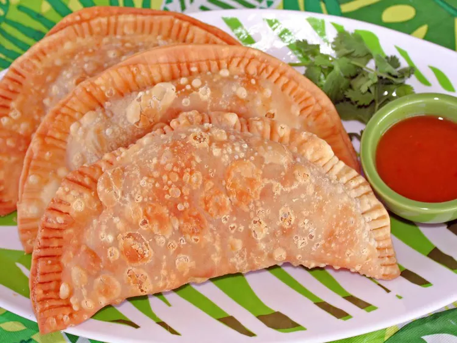

How to make Beef Empanadas

Empanadas Recipe
Want to learn how to make the best beef empanadas you ever had? Read Below!
Ingredients Needed, Simplified.
- Goya Extra Virgin Olive Oil
- Ground Beef
- Onion
- Tomato Sauce
- Spanish Olives
- Goya Sofrito
- Coriander and Annatto
- Minced Garlic
- Dried Oregano
- Black Pepper
- Goya Disks, thawed
- Corn oil, for frying
Steps
- Heat oil in pan
- Add the ingredients to the pan
- Cook that it up real good...
- Whip it into the goya disks
- Clamp the edges of the goya disk with a fork until sealed tightly!
- Throw them into the oil and fry it
- Take it out without burning it or yourself you...
Congratulations, you made an Empanada :D